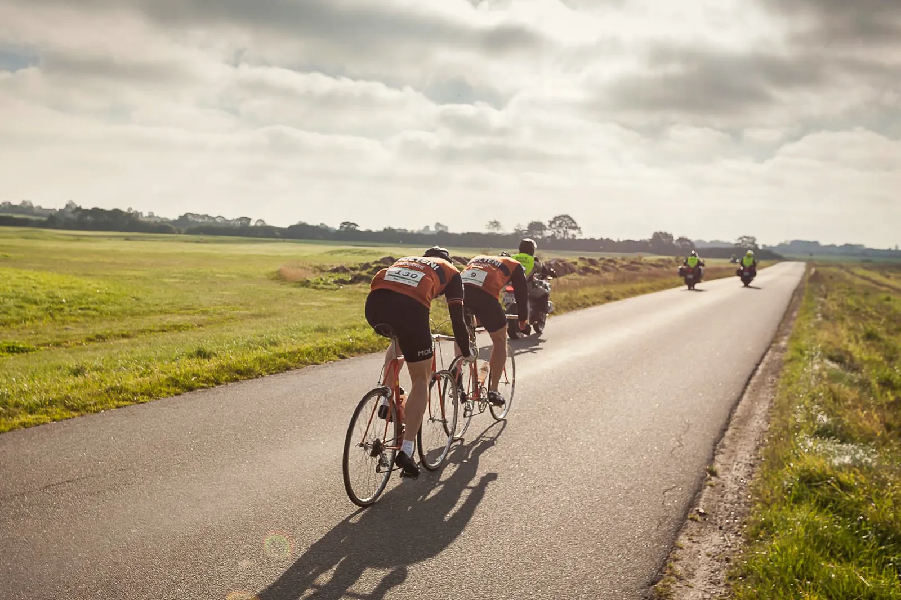
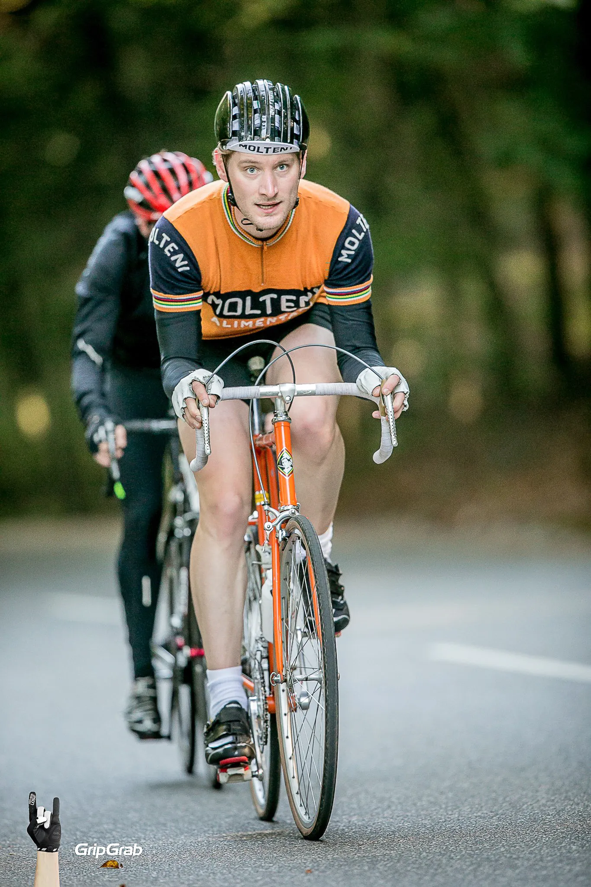
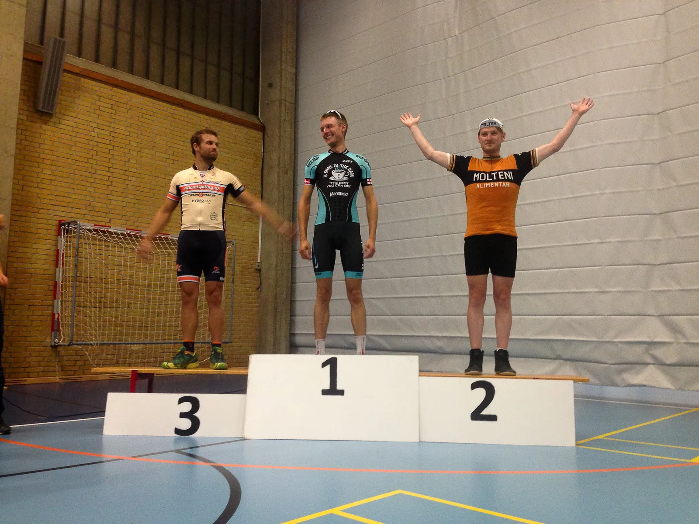

Podiepladser til Squadra Molteni ved Gran Fondo Munkebjerg 2015

Podiepladser til Squadra Molteni ved Gran Fondo Munkebjerg Efter en forrygende start, hvor Niels Bjørnsteen og Grane Maaløe var i et veltilrettelagt TV-udbrud de første 10 km, var tonen slået an.
Squadra Molteni tager altid hoveddøren.
Niels kæmpede derefter hårdt for at hænge på frontgruppen, hvor farten lå på den smertende side af 45 km/t.

Men Niels måtte efter små 20 km slippe frontgruppen og lade sig falde ned i 2. gruppe.
Her sad Eigil Leegaard og så stærk og velkørende ud. Og det var han også.
På alle stigninger var Eigil i front – og lagde et djævelsk hårdt tempo.
(Gran Fondo) Munkebjerg fik tæsk
På Munkebjergstigningen 2. gang rykkede Eigil og kun få kunne følge ham.
Niels måtte slippe gruppen. Eigil sluttede på en 28. plads – hvilke rakte til en 3. plads i aldersgruppen.
Niels fik en 37.plads og Grane fik efter sin voldsomme, men flotte start, kæmpet sig igennem i fin stil – og kom i mål på en 62. plads.
Der var 197 der gennemførte 80 km-distancen.
Steffan Sørensen valgte at stå af efter 1. omgang, da han ikke var helt frisk.
Kasper bliver 2’er på den korte Gran Fondo Munkebjerg distance

Helt frisk havde Kasper Sørensen heller ikke været i ugen op til løbet. Derfor valgte han at stille op på 40 km-distancen.
Men Kasper er en fighter af gudernes nåde. Efter en lille uges sygdom og en druktur torsdag aften – hamrede han igennem og kørte sig til en 2. plads.

Bum.
Morten Mejsen fra Peugeot Re-Cycled stillede til start på 120 km-distancen.
Respekt for det – og STORT tillykke til Morten for sæsonens første gennemførte løb på vintagecykel.
Det tegner godt for 2016-sæsonen.
Photo by GripGrab Media Crew | Martin Paldan